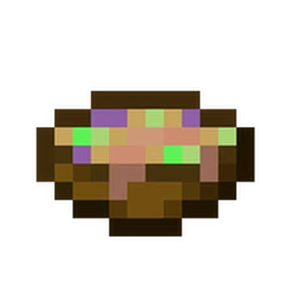

Suspicious stew can be obtained by "milking" a brown mooshroom with a bowl after using a small flower on it. When a small flower is used on a brown mooshroom, the brown mooshroom produces a suspicious stew related to that small flower the next time it is milked with a bowl.
Red mooshrooms do not produce suspicious stew. The brown mooshroom returns to producing mushroom stew until fed another small flower.